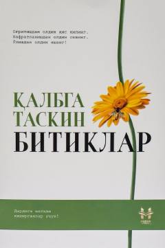

QTQalbga tasalli beruvchi va hayot mazmuni haqida o'ylantiruvchi bitiklar.
Mazkur kitob inson hayotining mazmuni, qiyinchiliklarga tasalli topish yo'llari va kundalik tashvishlardan xalos bo'lish haqidagi o'ylarni o'z ichiga oladi. Muallif jamiyat fikridan ko'ra o'z hayotidan zavq olib yashash muhimligini ta'kidlaydi. Asar kitobxonga ruhiy sokinlik bag'ishlashga qaratilgan.